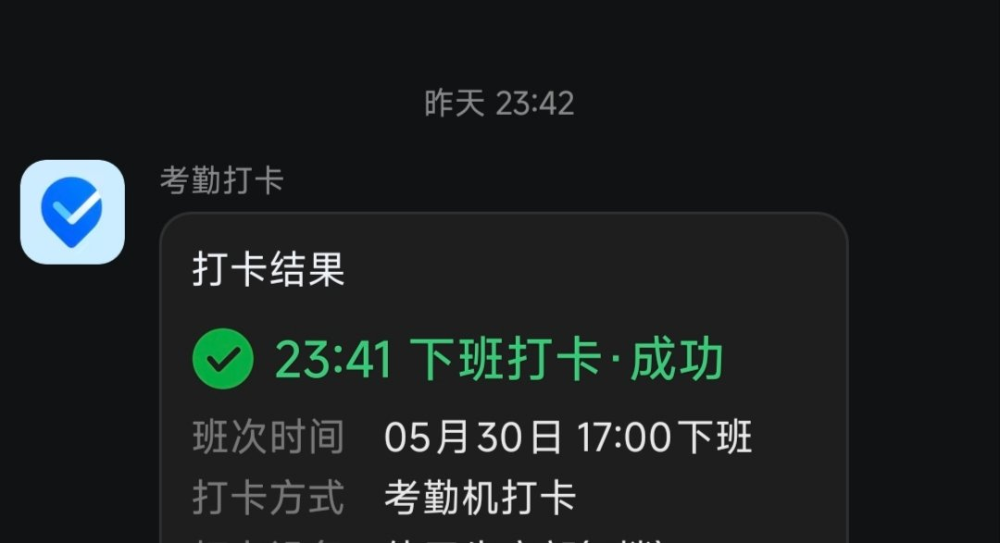

妃宫千早
@neko0202002
@luoshuyao 可以吃点维生素b，牛奶加上大量喝水，这样会舒服一些，休息不足，必须大量喝水还有补充糖分的，通宵加上睡眠不足，会导致水分大量流失，而糖分是熬夜睡眠不足所消耗的主要成分，毕竟大脑主要依赖葡萄糖供能，不补充的话会特别疲劳，头晕溃散，这两种方法是目前比较好的喔，至少可以让身体舒服一点嘛

洛书瑶
@luoshuyao
连续四天四小时的睡眠加高强度工作，发黑的眼眶，发紫的嘴唇，可能离猝死不远了。 https://t.co/W4BCEcKOEB